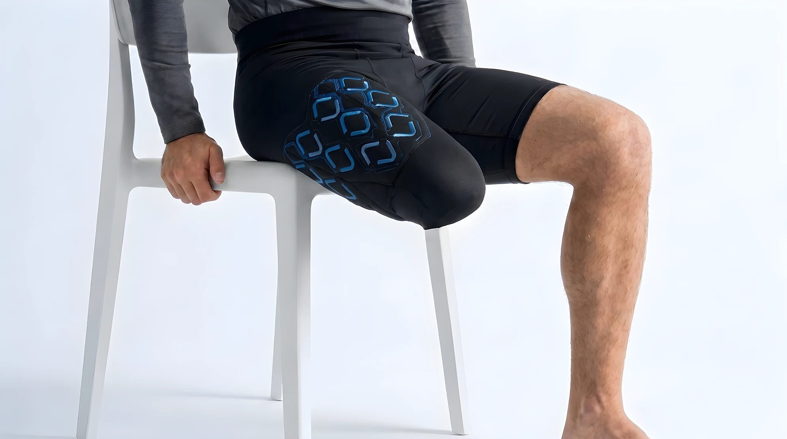
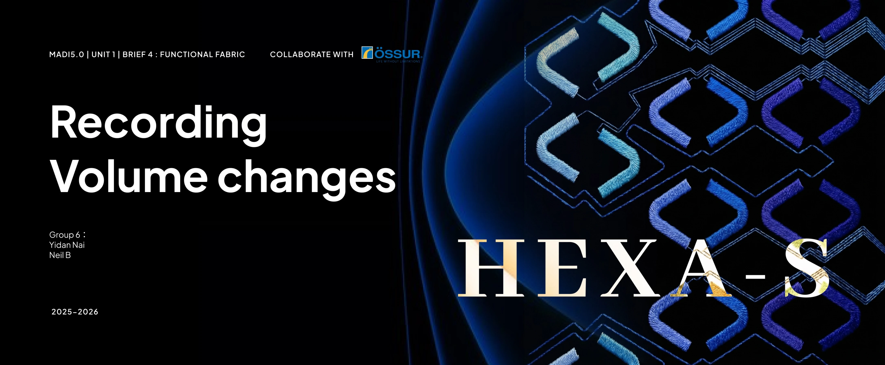
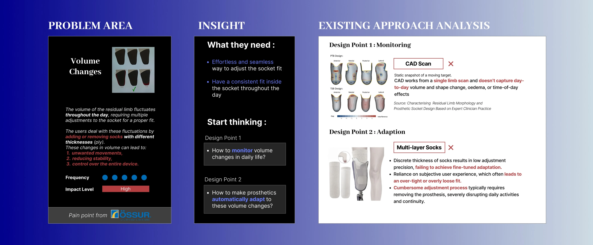
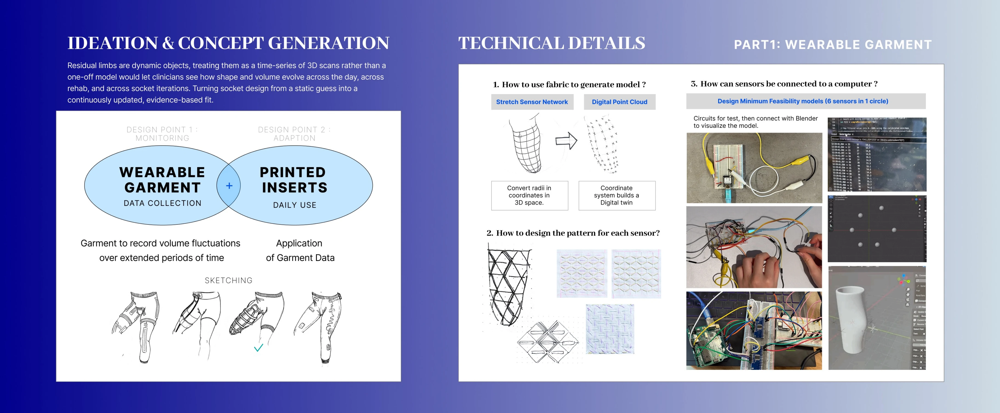
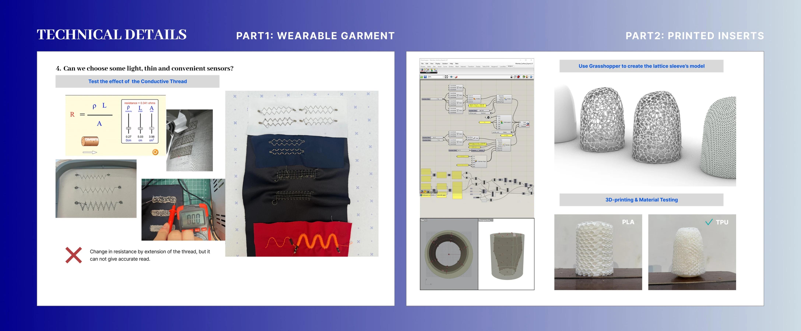
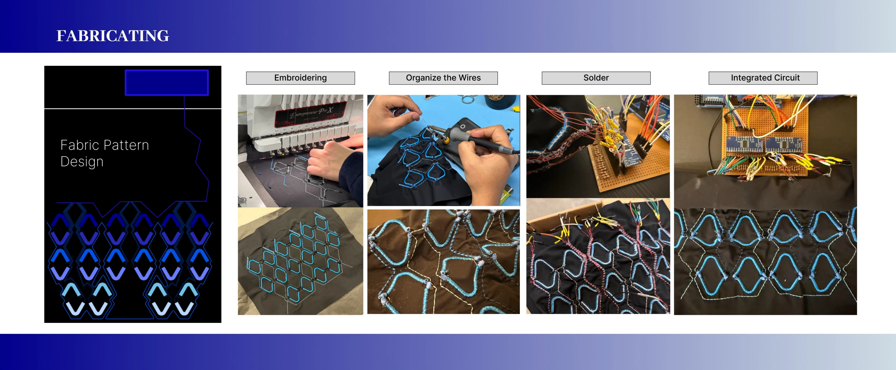
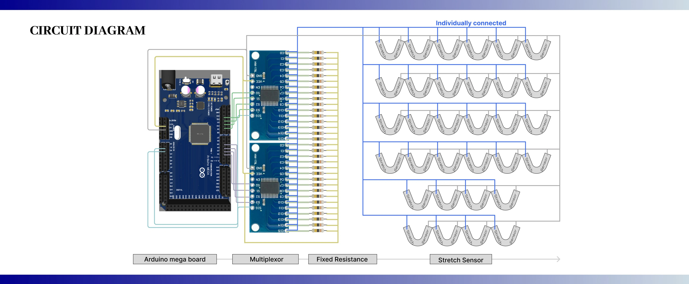
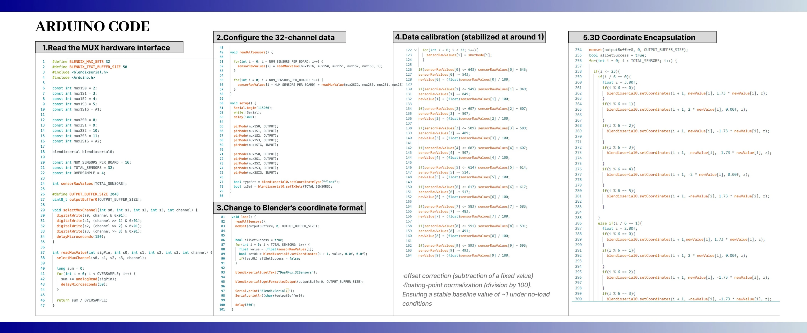
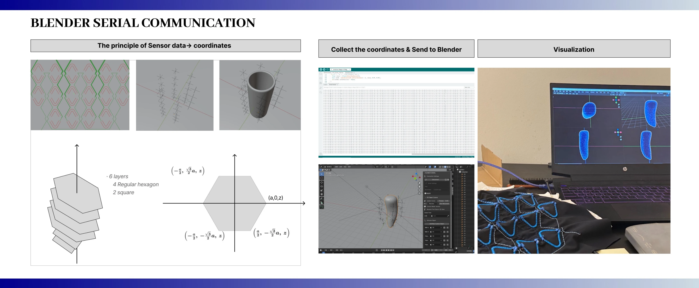
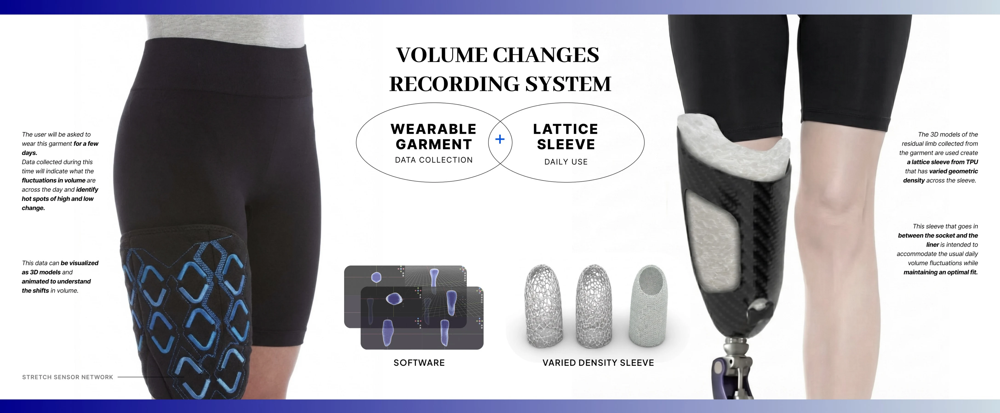

2026 · TEAM WORK
HEXA-S
Adaptive Smart Textile System for Prosthetic Users
An embroidered flexible sensing system monitors residual-limb volume changes and supports dynamic prosthetic socket adaptation and long-term health management.
PROJECT FILM
PROJECT DOCUMENTATION








